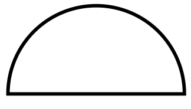
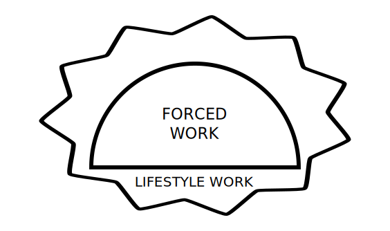
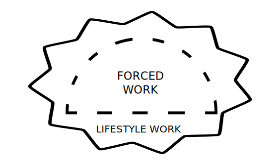

Should we take Risks?
May 15, 2016
Should we take risks?
And when should we take them?
There has always been a conflict between forced work, what you have to do, and lifestyle work, what you want to do. Many risks tend to start in one of these. Because essentially, taking risks is the process of wanting more of something. And usually we want more time for our lifestyle work and, consequently, neglect the forced work. Or vice versa.
Should we take risks?
Yes.
Taking risks is an achievement of breaking from the line of normality and not being bounded by embarrassment or fear. Normality does not progress, if it did, definitions of ordinary would only alter to extraordinary. If for one second, humanity was to flee from the depths of care then that second would last a lifetime.
However, risks are still risks: the lack of sight. And a major risk you do take should only be considered if you think it can progress you to your ideal life, whatever that may be.
Think of an ideal life and consider if neglecting the 'forced work' will decrease any chance of reaching that outcome.
When should I take them?
Let's go back to our 2 main conflicts in life, with the help of some simple representations:
Forced Work:
Lifestyle work:
Lifestyle work is controlled by you. It usually has no simple path and, as it is controlled by you alone, it may lead to your ideal life. Risks are much easier to take here.
Forced work is not controlled by you. It usually has a simple, outlined path and may not necessarily lead to your ideal life. Risks are commonly harder to take here, and may include more implications.
There are 2 main scenarios where risks are mainly taken:
1. When the 'forced work' is considered important and may lead to your ideal life – yet you still want to do 'lifestyle work'
2. When the 'forced work' is not linked in any way to your ideal life - yet you still want to do 'lifestyle work'
Let's look at the first scenario. If the 'forced work' is considered important and directly linked to your ideal life, yet you want to still do 'lifestyle work', then this graph shows what could be followed:

The graph shows the lifestyle work and forced work in similarity with each other.
First - don't limit and compensate the 'forced work'. Keep the risk out of this zone and only adapt the 'forced work' to make it more of your own: think of each aspect of the work and find interests and wonder in each one. Link together aspects from the 'lifestyle work' to encourage curiosity and concentration.
Second - make all 'lifestyle work' compulsory. To avoid neglecting the 'forced work', make the 'lifestyle work' compulsory and forced. E.g. set up fixed times and areas where this lifestyle work can be taken place – do not give yourself fixed lifestyle work in large quantities and only do lifestyle work in the fixed areas/time. If the 'lifestyle work' is made compulsory, then less risk is put on the 1st section.
Only keep the risk contained in the outer 'lifestyle' section.
Let's look at the second scenario. If the 'forced work' is not linked in any way to your ideal career and you still want to do 'lifestyle work', then take risks in both sections and follow:

Keep the 'forced work' but allow your lifestyle work to overlap. Find areas in the 'forced work' which interest you and focus on those as a method of focusing on the rest of the area. Take risks in both sections and share stupidity in both. Adapt to involve both sections within each other, however, take all opportunities in the 'forced work' and learn to adapt and focus in uncomfortable situations.
If 'forced work' may help you:
If 'forced work' may deprive you: